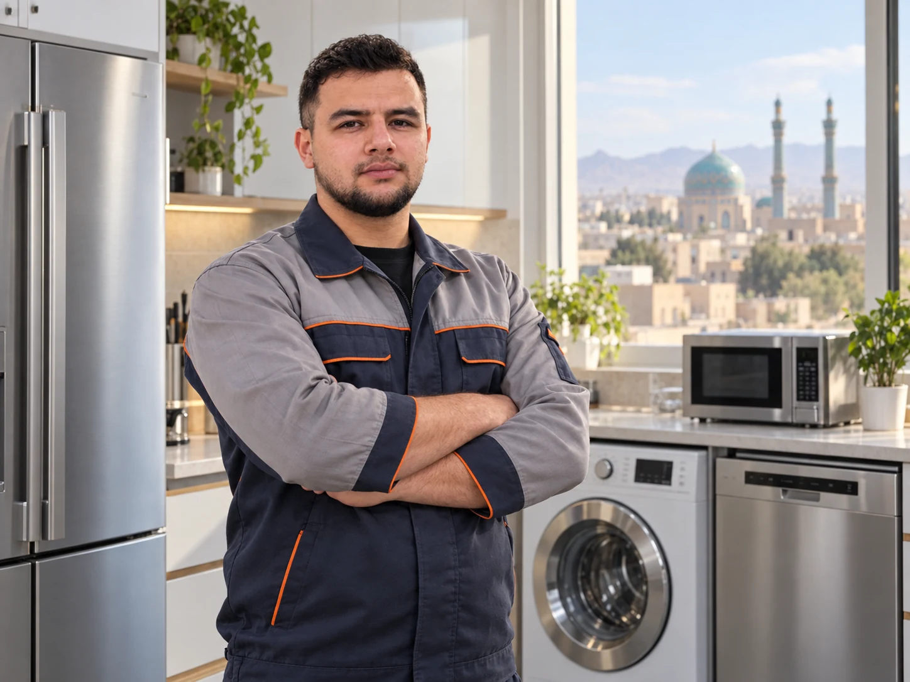

تعمیر تخصصی لوازم خانگی در سبزوار
خرابی را ثبت کنید؛ پیگیری را به ما بسپارید
تعمیر یخچال، لباسشویی، تلویزیون و سایر لوازم با ضمانت — اعزام فوری تکنسین
پاسخگویی زیر ۱۰ دقیقه • سبزوار و حومه • گارانتی کتبی

مهندس موسی الرضا کرابی • تکنسین ارشد سبزوار تعمیر
کار تمیز، قیمت شفاف، حضور بهموقع
بیش از ۸ سال تجربه در سبزوار — از یخچال و لباسشویی تا پکیج و کولر. عیبیابی دقیق، قطعه اصلی، گارانتی کتبی.
حومه هم میرویممشاوره اولیه رایگان
شرایط کاری
- ⏱ پاسخ اولیه زیر ۹۰ دقیقه در ساعات کاری
- 🧰 ابزار کامل + قطعات پرمصرف همراه
- 🛡️ ضمانت سرویس، فاکتور شفاف
🌤️
آب و هوای سبزوار
پیشبینی ۷ روزه و نکات سرویس لوازم خانگی
بهروزرسانی ساعتی ←
←
نصب اپلیکیشن
اعلان لحظهای + دسترسی آفلاین
اعلان لحظهای پس از نصب فعال میشود — /sw.js
خدمات
تعمیر تخصصی لوازم خانگی

تعمیر یخچال
تعمیر یخچال فریزر و ساید بای ساید
ثبت درخواست →

تعمیر لباسشویی
تعمیر ماشین لباسشویی اتوماتیک
ثبت درخواست →

تعمیر ظرفشویی
تعمیر ماشین ظرفشویی
ثبت درخواست →

تلویزیون
تعمیر تلویزیون LED و LCD
ثبت درخواست →

جاروبرقی
تعمیر جاروبرقی
ثبت درخواست →

پکیج و بخاری
تعمیر پکیج و بخاری دیواری
ثبت درخواست →

آبگرمکن
تعمیر آبگرمکن
ثبت درخواست →

کولر گازی
تعمیر کولر گازی و اسپلیت
ثبت درخواست →

اجاق گاز
تعمیر اجاق گاز و فر
ثبت درخواست →

مایکروفر
تعمیر مایکروفر
ثبت درخواست →
🔧
سایر لوازم خانگی
تعمیر سایر لوازم خانگی
ثبت درخواست →
آمادهای؟ دستگاهت را درست میکنیم!
ثبت کن، هماهنگی تلفنی، تکنسین میآید — همین.